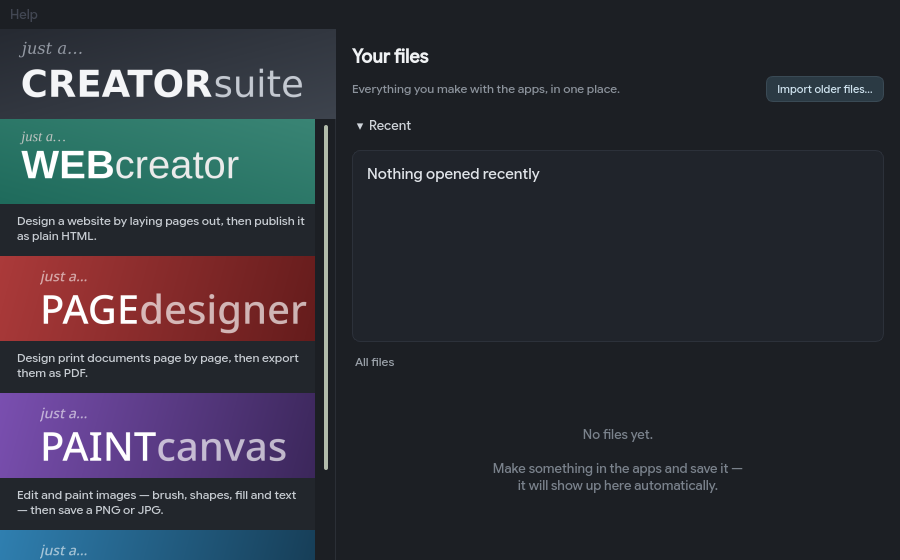

Simple applications for people who want to work using old familiar workflows but don't want to learn a new workflow from a more powerful, but complex app like the ARTcraft ones. Use familiar menus, toolbars, a page in front of you: open it and get on with the job. No subscription, no account, no cloud, no tutorial, just save ordinary files to ordinary folders on your own disk.
Each one is a ground-up recreation of an easy-to-use app, written for Linux. Not a port, nor wrapper, nor fork: new code that borrows the shape of a retired old app, rather than the thing itself. If you already know how to do something in one of these popular British apps, you should be able to do it here without learning anything new — the same menus in the same places, the same words for the same jobs, the same order of operations.
The excellent ARTcraft suites do a great deal, and are perfect for familiar users but for those of us used to apps that are no longer with us, this isn't a replacement for tools like those of ARTcraft... they are a re-creation of British alternatives many of us used and brings them back and makes them quick.
These are not a replacement for the big suites and not trying to be. If you need what ARTcraft can do, use ARTcraft.
The apps

just a… WEBcreator
Website designer · saves .webc
Design a website by laying pages out — drag text, pictures, buttons and menus where you want them, share the header on a master page, preview in your browser, and publish plain HTML you can upload anywhere.
- Lay pages out freely; master pages for shared headers and menus
- Text, pictures, shapes, nav bars, galleries, forms, tables, a news feed
- QuickShapes, drop shadow & glow, dashed lines & arrowheads

just a… PAGEdesigner
Print documents & PDF · saves .pagc
Design print documents page by page — text frames that flow between columns, master pages, guides and page numbers — then export a vector PDF.
- Linked text frames (newspaper-style text flow), booklet view
- Master pages, guides, columns, page numbers
- QuickShapes, effects, drop cap, spell check, tables
just a… PAINTcanvas
Photo & image editor · saves .png / .jpg
A layer-based image editor — paint and draw, retouch photos, and apply adjustments and filters — in the spirit of PhotoPlus.
- Layers with blend modes, opacity and visibility
- Adjust: brightness/contrast, levels, hue/saturation, colour balance, temperature, threshold, posterize, greyscale, sepia, invert
- Filters: Gaussian blur, unsharp mask, median, sharpen, emboss, find edges

just a… DRAWmaster
Vector drawing · saves .svg
A vector editor — shapes, lines, freehand and polylines, a QuickShapes gallery and drop-shadow/glow effects — saved as scalable SVG it can re-open and keep editing.
- Rectangles, ellipses, lines, pen (polyline) and freehand paths
- A gallery of 20 QuickShapes; drop shadow & outer glow
- Re-opens its own SVGs losslessly (the drawing is stored in the file)
just a… CREATORsuite — the launcher
The home for the whole family: a two-pane hub with your apps on the left and everything you have made on the right — a Recent list and a browser of your “just a…” folders, so you can jump straight back into a project.

About the launcher & how to install it ›
Install
Each app installs and updates on its own. Clone once, then run whichever installers you want — nothing needs root beyond the dependency line.
git clone https://github.com/janszafranski/just-a-collection-of-apps.git
cd just-a-collection-of-apps
apps/collectionofapps/install.sh # the launcher / hub
apps/webcreator/install.sh
apps/pagecreator/install.sh
apps/paint/install.sh
apps/draw/install.shEach app checks the repository for a newer version of itself (and the
launcher shows an Update button), and each has an uninstall.sh beside its installer.